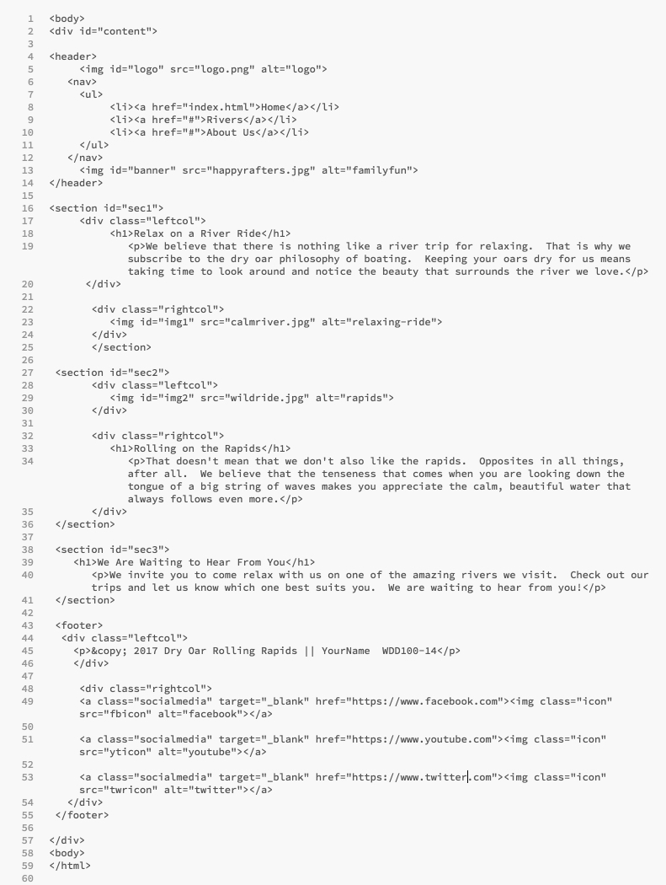

Wk09 Layout the Home Page
Activity Instructions
Estimated Time: 45 minutes
We have made a lot of improvements to our page over the last few weeks. This week we finally take on the layout. After we finish the layout of our page it should look very similar to the wireframe, and will be close to complete. We are going to use "flexbox" to layout the sections of our page.
Review again the siteplan wireframe for the Dry Oar site. We will start from the top and work down to position all of the elements that need it. The header (logo and navigation) will take a bit of extra work, and few concepts that we will not learn until next week...so we are going to skip it for now.
Step 01
First let's consider the banner. According to the wireframe it should extend all the way across the width of the page. Depending on which image you are using your's may or may not be doing that. Lets set a width of 100% on that image.
Step 02
Now lets position the first section of headline, paragraph and image, second section of image, headline, and paragraph, and the footer section of the info/name line and the social media icons/links.
You should have grouped elements together in previous weeks...the code for this section should look something like this:

Notice how each section has a leftcol and rightcol div. Week 7, you should have set a width on them as well to 48%. Now all we need to do is get them to line up horizontally.
Let's try css flexbox to do this. Flexbox is good when we have several elements that we need aligned as a row or column. In fact it makes it really easy to switch from column to row and back. Flexbox relies on setting up a flex container or parent first. In our case the containers will be our rows which are made in the HTML with <section>s.
The link provided above is to a great resource about flexbox from CSS-Tricks: A Complete Guide to Flexbox. You really should take a minute to look it over. There are also many great youtube tutorials on flexbox, try those out when you have time.
Add the following property display: flex;, to a rule in your css to modify the first 2 sections on your page to turn them into flex containers. Notice that there are leftcol and rightcol in the footer as well so we better add the footer to the statement. That rule would look like the following:
#sec1, #sec2, footer {
display: flex;
}
Now all of the immediate children will become flex-items or children. (Again in my case with the code above the flex-items would be the 2 divs, .rightcol and .leftcol, and the footer)
You should see an immediate change once you make your first section flex. You should end up with something that looks like this:

Not bad for one line of css right? It automatically reformatted into a row. This is due to the default values for flex. They are set to row and nowrap. The row is perfect for what we are trying to do, but the nowrapcould cause us problems.
Those defaults are set with the flex-flow property. Take a moment to review the values it can have.
The problem that nowrap will cause is best shown by shrinking the browser window as small as it will go. (Like if you were on a phone) The page ends up looking something like this:
Not great. It would be better if the 2 elements that make up our row wrapped and stretched back out to full width at a certain point.

Step 03
Begin fixing our small screen view by adding a flex-flow: row wrap; line just below the line that setup our flex container (display:flex;). This will allow our flex items to wrap, but it won't make them wrap. Flex items by nature are allowed to shrink and grow with the space they have available. This is controlled with the flex property.
Add flex: 1; to both the left and right divs in your section row. (In my case it would be .leftcol and .rightcol). This will let each of them take up 1 share of the space...so they will be the same size. Try changing one of them to 2. Now it should take up twice as much space as the other.
If your images are not resizing to fit in the box you have them in make sure you have the following rule in your css:
img {
max-width: 100%;
}This will make sure that none of your images can ever be larger than the box they are in.
We need one last bit of css to fix our small screen view. Lets set a limit on how small the right and left columns can become. We can use the flex property for this. Above I showed you the simplest way to use flex. It can actually take 1, 2, or 3 values. Using 1 like we did above it basically means each flex item should have one share of the space, and let that space grow or shrink evenly as it needs to fill the available container. We could also do something like this flex: 1 0 15em; This would mean start with the item at 15em width, but let it grow to fill all available space (first 1). Don't let it shrink (middle 0) smaller than 15em though. Add that to your css. My css (for the html above) Is looking like this:
#sec1, #sec2, footer {
display: flex;
flex-flow: row-wrap;
}
.leftcol {
width: 48%;
flex: 1 0 15em;
}
.rightcol {
width: 48%;
flex: 1 0 15em;
}
This should have fixed our small view. If you shrink your browser window again you should see something like this:
Much Better!

Step 04
Looking good! One thing is bugging me though. The headline and paragraph in the first section is aligned at the top of that space...it would look much better closer to the center. This is another thing that flex excels at.
Alignment in flexbox is governed by two properties. align-items and justify-content.
When we set the flex-flow to row we were actually setting up the primary axis direction: row (or horizontal). This is significant because alignment along the primary axis is controlled with justify-content, alignment along the cross-axis is governed by align-items
Since our primary axis is row (horizontal), we change the cross-axis (vertical) alignment with align-items. Add the following to your css for the flex container: align-items: center;. Just like that our paragraphs will always be centered vertically...no matter how the width of the page changes!
Step 05
One last thing and our rows will be done. Sometimes the paragraphs and images are smushed together. Add some margin around them to make sure this doesn't happen.
We started with separate classes for my left and right columns (.leftcol and .rightcol). But, as the css came together, the properties and values I had under each ended up exactly the same, so it is a better idea to put them together like we did for the sections.
Instead of this:
I .leftcol { width: 48%; flex: 1 0 15em; margin: .5em; } .rightcol { width: 48%; flex: 1 0 15em; margin: .5em; }It should be this:
.leftcol, .rightcol { width: 48%; flex: 1 0 15em; margin: .5em; }It's good practice to review your css from time to time to watch for things like that.
Also watch for css rules that have the exact same selector. Those should be combined as well.
Step 06
We worked on the bottom (3rd) section a week or two ago to get it to center, and it should look pretty good by now. One thing though, it looks a bit squished. I think it would look better if it were closer in size to the other sections. Use margins, height, or padding to make it so.
Third section? you may ask...what happened to the second section? Well with mine since I used the same class names for the different parts of my rows (leftcol, rightcol) the second section just took care of itself! Anytime you have sections of your page that are styled or laid out similarly you should re-use your classes to avoid having to do the same things over and over.
Step 07
The last thing to do now is to finish the footer. According to the wireframe the copyright should be on the left, the social media icons on the right, the whole footer should be 55px high, and there should be space around the icons. This is similar to what we have done before. You should be able to figure it out.
Review the tips on last weeks positioning activity if you get stuck. (Hint: there are several ways to do this, you could use float, display:inline-block, or display: flex to do the major movement, then you will probably need to add some padding, margin, or width on the different elements in the footer to finish it off. If you use float remember that the floated element must come before the other stuff in the html.)
Step 08
View your page in a browser to make sure the webpage displays correctly. Once verified, submit the URL for this assignment in ILearn. Then remember to backup your files
Grading
This activity will be graded using the following rubric (10pts)
- Positioning of elements (with the exception of the logo and navigation) looks like that in the wireframe.
- The HTML is well formed and without errors and the page is visually appealing.